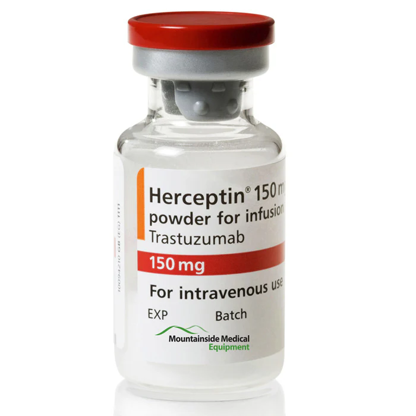

Herceptin
★
★
★
🕒 Time: 7 minutes
💉 Yield: 8mL
Print Recipe
Non-Haz Home
Ingredients
Herceptin
SWFI
Base Bag
Directions
Reconstitute each Herceptin Vial with 7.4mL of SWFI.
Calculate the dose needed.
Draw up the desired volume.
Take photo.
Once RPH approves, inject into base bag.
Calculator
Enter the dose in mg:
Calculate